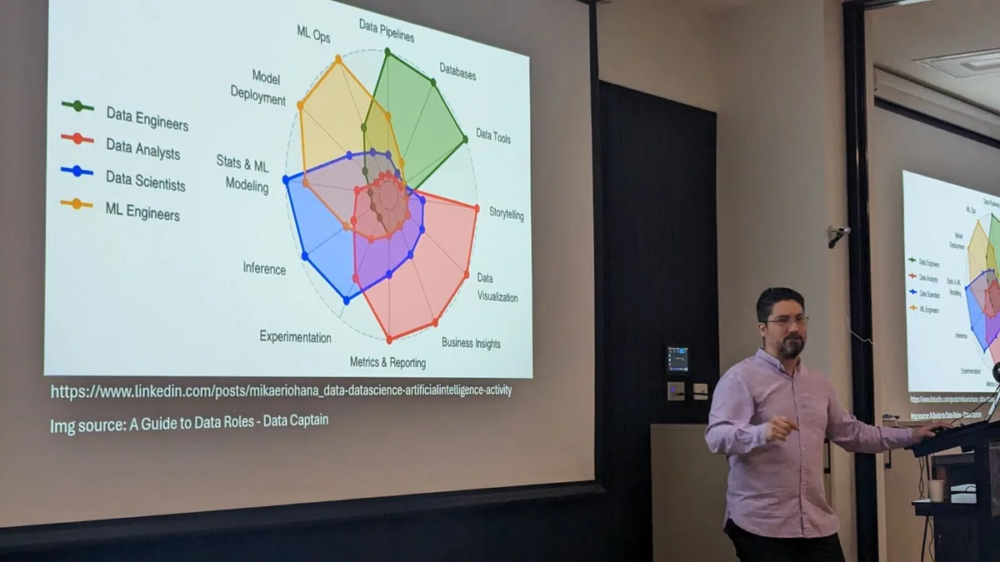

Aland Astudillo
Biomedical engineer, data scientist and AI consultant
Gold Coast, Queensland, Australia · English and Spanish
For ten years I have built data and AI systems for hospitals, governments, universities and companies. Imaging pipelines, retrieval and knowledge systems, forecasting and operational reporting, and the governance work that has to happen before any of it touches a real decision. The kind that have to keep working after the pilot ends.
Selected work
- Queensland Museum and the Queensland Government
At Clevvi. Documenting First Nations cultural collections. I wrote the tender that won the Precinct Startup Challenge, securing $100,000 in funding, then built the system over eight months with a small team: a multi-agent AI service on AWS that reads up to eight images of an artefact and drafts a catalogue record in under two minutes, with verifiable credentials for provenance through Anonyome Labs. Every record goes to curators and knowledge holders for review under ICIP governance. The system proposes, people decide. Demonstrated to more than twenty stakeholders across government, museums and industry. - An Australian health technology startup
Through Sparkbrain. AI strategy and platform architecture, from the approach down to the shape of the system. - A Gold Coast community services organisation
Through Sparkbrain. Community data analytics and operational reporting, including the data model the reporting runs on. - A national agricultural research body
At Clevvi. Econometric analysis that turned inconsistent field and production records into something the organisation could make decisions from. - Deep learning for mammography triage
Biomedical Department, Universidad de Valparaíso, in a joint pilot with the Chilean National Mammography Centre. I co-architected the deep learning cloud system that read mammography studies and ranked them for review, so the cases that needed a radiologist soonest reached one soonest.
What I work on
I usually come in when the problem is still vague. Scoping it with the people who own it, mapping the process, designing and prototyping, then the data science itself: machine learning and statistical modelling, AI and LLM applications, retrieval augmented generation and knowledge graphs, and the AI governance and risk work that lets an organisation put any of it in front of the public.
Mostly in health, government, research and industry, where the data is messy and the constraints are real.

Experience
- Senior AI and Digital Solutions Consultant, Clevvi 2025 to present
AI scoping and architecture for enterprise clients in regulated industries, document intelligence and RAG systems, and the governance frameworks that keep them auditable. - Founder and Principal Consultant, Sparkbrain 2024 to present
Independent consulting: digital transformation, process mapping, data modelling and AI applications. - Senior Data Scientist, Research Graph Foundation and Swinburne University of Technology 2024
Graph based knowledge architectures, entity extraction and NLP pipelines across a health and wellbeing research network. Mentored computational science interns. - Senior Data Scientist, NICM Health Research Institute, Western Sydney University 2023 to 2025, Adjunct Fellow since
High throughput pipelines for multi channel brain signal data, statistical generative models, and noise filtering for clinical datasets. - Machine Learning Engineer, Biomedical Engineering, Universidad de Valparaíso 2020 to 2022
Deep learning and medical image analysis, moving image processing pipelines into the cloud to cut triage delay on high risk findings.
Tools
- Languages and analysis Python, R, SQL, MATLAB
- AI and LLM systems Retrieval augmented generation, agentic frameworks, Model Context Protocol, knowledge graphs, Neo4j
- Machine learning PyTorch, TensorFlow, scikit-learn, statistical and generative modelling, signal processing
- Cloud and delivery AWS, Azure, Docker, CI/CD, web and mobile development
Organisations I work with
- Sparkbrain — founder. Independent AI, data and technology consultancy.
- Clevvi — AI strategy and data science.
- Tedix — collaborator.
- Exonova — technical advisor
- Tellie — technical advisor
- Western Sydney University — Adjunct Fellow, NICM Health Research Institute
- Queensland University of Technology — Visiting Fellow, ARC Training Centre for Behavioural Insights for Technology Adoption, Faculty of Business and Law
- Swinburne University of Technology — collaborator
- Research Graph Foundation — collaborator
What keeps my attention
Two lines of work. In industry, AI in settings where being wrong has a cost: health, government, anything with a regulator. The interesting problem there is rarely the model, it is the evaluation, the governance, and the handover to the people who have to live with it. In research, how brain activity organises itself over time, which is what my PhD was about and what I still publish on.
Applied AI writing
- Unveiling the synergy: retrieval augmented generation meets knowledge graphs — tools and platforms for integrating knowledge graphs with RAG pipelines
- The combined use of RAG and fine-tuning to improve LLM pipelines — when to retrieve, when to fine-tune, and when to do both
- What is LLMLingua? — prompt compression to improve large language model performance
- How to use GROBID to extract text from PDF files — machine-learning extraction of structured information from PDFs
Background
- BSc, MSc and PhD, Universidad de Valparaíso
Biomedical engineering, then engineering sciences with a thesis on machine learning and statistical modelling in neuroscience, then a PhD in sciences, biophysics and computational biology, on machine learning and statistical modelling applied to brain dynamics. - Certified Member , Australian Computer Society
- Registered expert , Scimex, Australian Science Media Centre
Research and writing
Peer-reviewed research in computational and cognitive neuroscience: statistical modelling of brain dynamics, signal processing and clustering, and computational models of neural activity, across both clinical and basic neuroscience. Further published work on retrieval augmented generation and knowledge graphs. Around twenty conference presentations across Australia, Chile, Canada and Italy, and a popular-science book on the brain. The full record is on Google Scholar and ORCID.
Profiles
Professional
Publications and research
Affiliations and expert registers
Contact
The quickest way to reach me is LinkedIn.